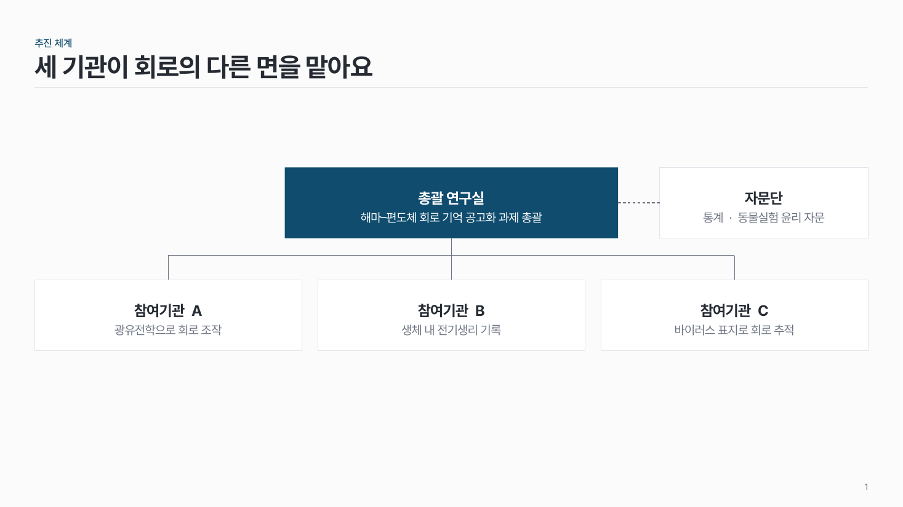
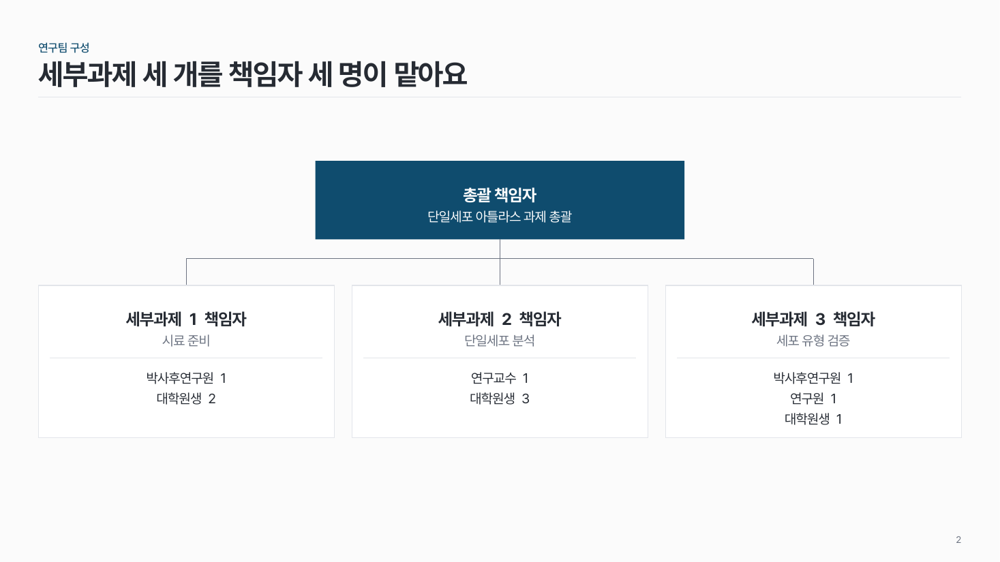

추진체계 struct-01
맨 위 총괄 노드에서 수행 노드 2–4개로 꺾은 선을 내려 역할과 관계를 보여 줘요.

이 시안
총괄 + 수행 3 + 자문(점선)
슬라이드 제목: 세 기관이 회로의 다른 면을 맡아요
언제 쓰나
주관기관·참여기관·자문단 사이의 역할과 관계, 또는 연구팀 조직(총괄 → 세부과제 책임자 → 참여연구원)을 보여 줄 때요.
구성
- 맨 위 가운데에 총괄 노드 (수행 노드보다 1.3배 넓게, 진한 색).
- 가운데 줄에 수행 노드 2–4개를 같은 크기로.
- 총괄에서 수직·수평 직선으로 내려 각 노드에 이어요.
- 노드 안에 이름 한 줄 + 역할 1–2줄. 사람 조직도면 아래에 참여연구원.
- 자문·협력은 총괄 옆에 점선으로.
지킬 것
- 노드는 12개 이내, 좌우 대칭.
- 화살표는 방향이 있는 관계에만, 선 위에 동사 하나.
- 노드 사이 간격은 같게.
하지 말 것
- 모든 연결선에 화살표를 붙이지 않아요.
- 노드마다 다른 색을 칠하지 않아요.
- 역할 설명을 글머리 기호 3줄 이상으로 늘어놓지 않아요.
시안 비교
같은 내용을 옵션만 바꿔 그렸어요. 그림을 누르면 크게 보여요.
A총괄 + 수행 3 + 자문(점선)
슬라이드 제목: 세 기관이 회로의 다른 면을 맡아요

B사람 조직도 (수행 노드 아래 참여연구원)
슬라이드 제목: 세부과제 세 개를 책임자 세 명이 맡아요